🧠 Week 4 – Session 2: Edge Impulse – TinyML on Edge Devices
By Jaydeep Ashtekar Sir
📌 Introduction to Edge Impulse
Edge Impulse is a development platform used to create, train, and deploy Machine Learning (ML) models on edge devices such as microcontrollers, sensors, and embedded systems. It enables developers to collect sensor data, build AI models, and run them directly on devices like the ESP32, Arduino, and other IoT hardware without requiring continuous internet connectivity.
The platform simplifies the entire TinyML workflow, including data acquisition, data labelling, feature extraction, model training, testing, and deployment. Edge Impulse supports data from various sensors such as accelerometers, microphones, cameras, and environmental sensors.
By processing data locally on the device, Edge Impulse reduces latency, improves privacy, and minimizes power consumption. It is widely used in applications such as smart attendance systems, predictive maintenance, gesture recognition, environmental monitoring, and smart agriculture.
Overall, Edge Impulse makes it easier for students, researchers, and engineers to integrate Artificial Intelligence into embedded and IoT projects.
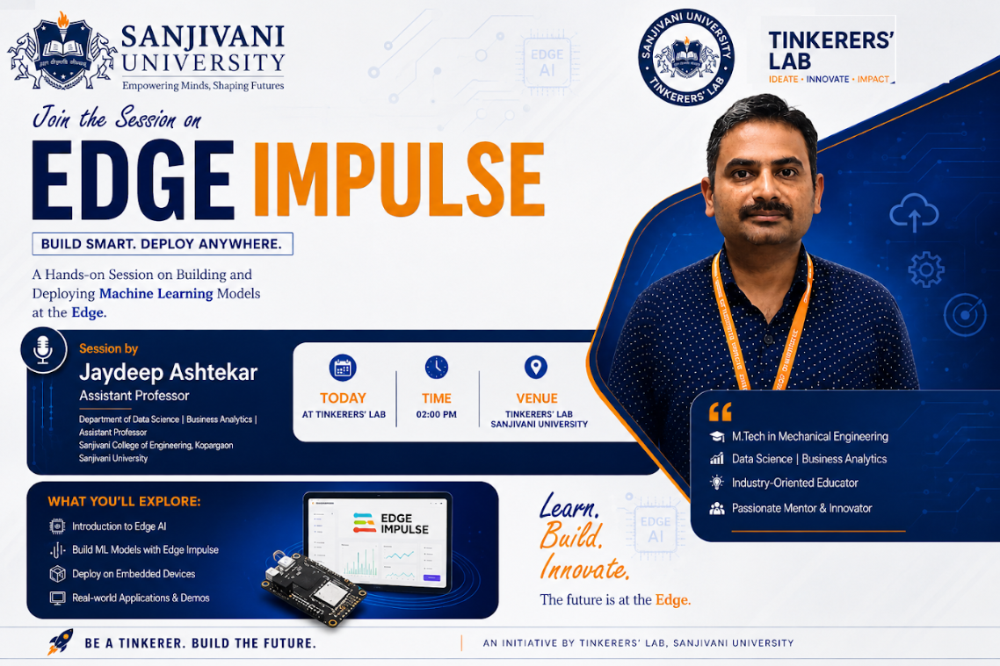
🔧 How to Use Edge Impulse
Step 1 – Search Edge Impulse
Open your browser and search for “Edge Impulse”.
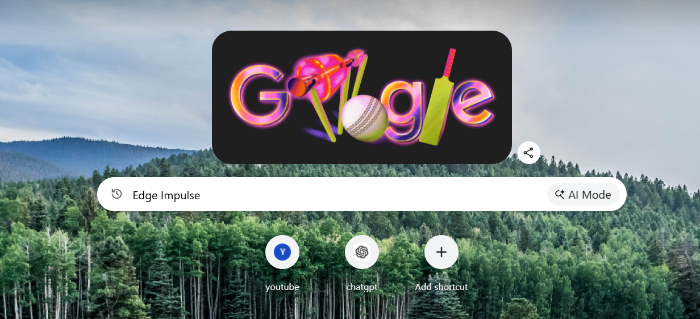
Step 2 – Click on the link
Open the official Edge Impulse website.
Step 3 – Sign in or Create an account
Click on Sign in if you already have an account, or click Get started to create a new account.
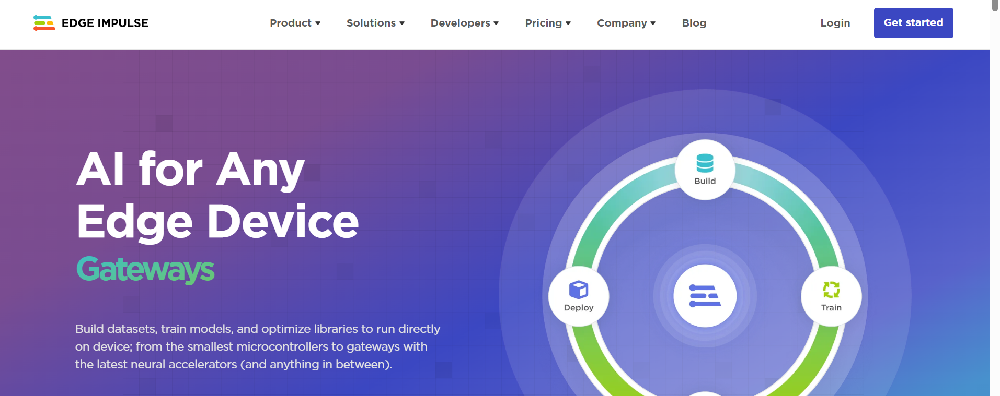
Step 4 – Click on Devices
From the dashboard, click on the Devices tab.
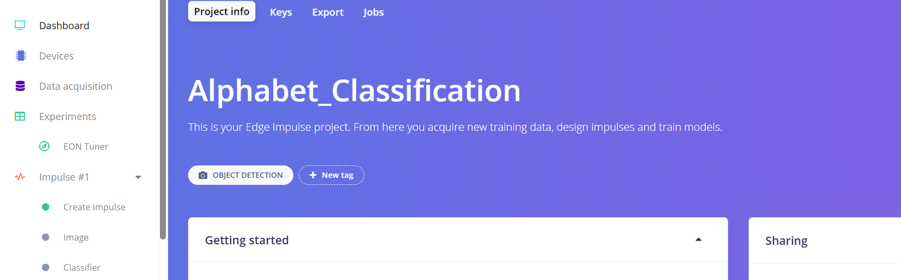
Step 5 – Connect a new device
Click on Connect a new device to add your hardware (e.g., smartphone or ESP32).
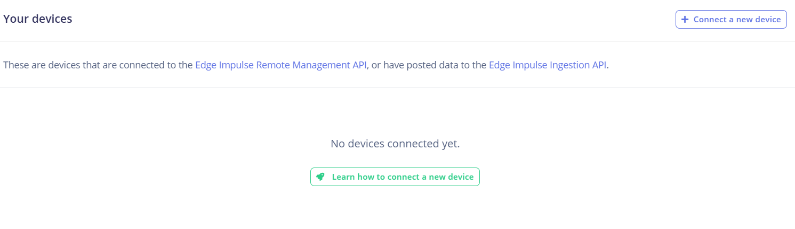
Step 6 – Scan QR code
Scan the QR code on your smartphone to connect a device.
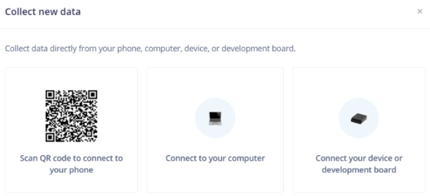
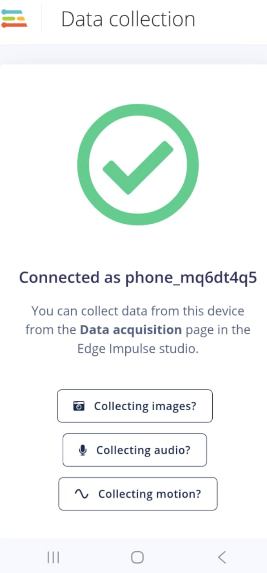
Step 7 – Get started
After connecting the device, click Get started. You will see your connected devices listed.
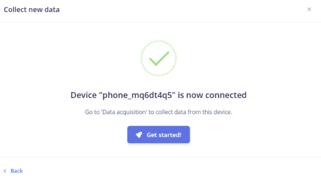
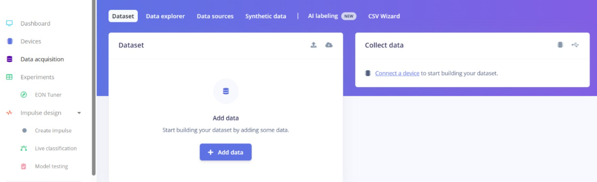
Step 8 – Data acquisition
Click on Data acquisition to start collecting samples.
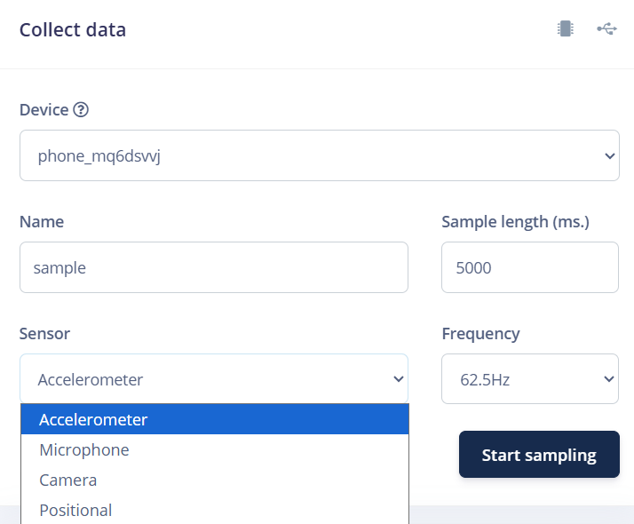
Step 9 – Select Camera sensor
From the sensor option, select Camera.
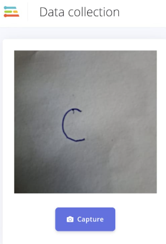
Step 10 – Collect samples
Collect samples of Alphabets (A, B, C, etc.) from your phone camera. The system will learn to recognise alphabets from images.
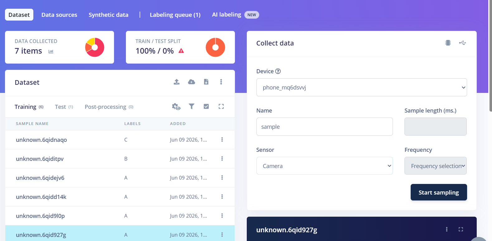
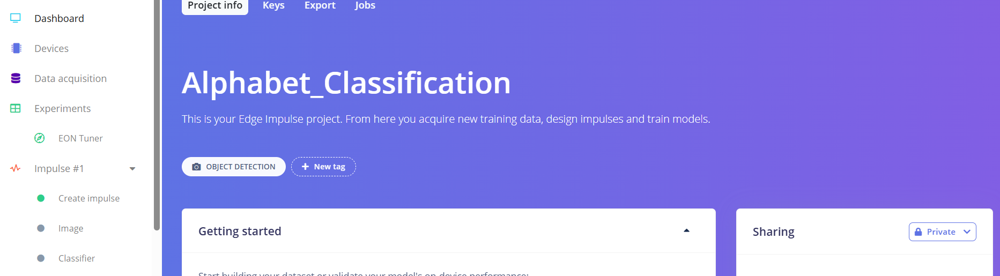
Step 11 – Create impulse
Click on Create impulse to define the machine learning pipeline.
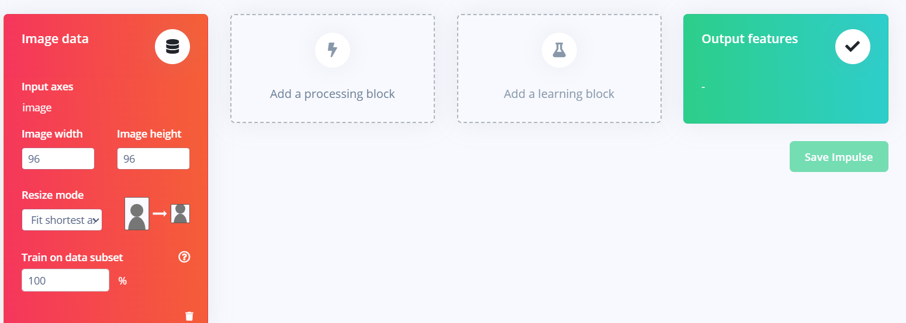
Step 12 – Add processing block
Click on Add processing block and select Image (or appropriate block).
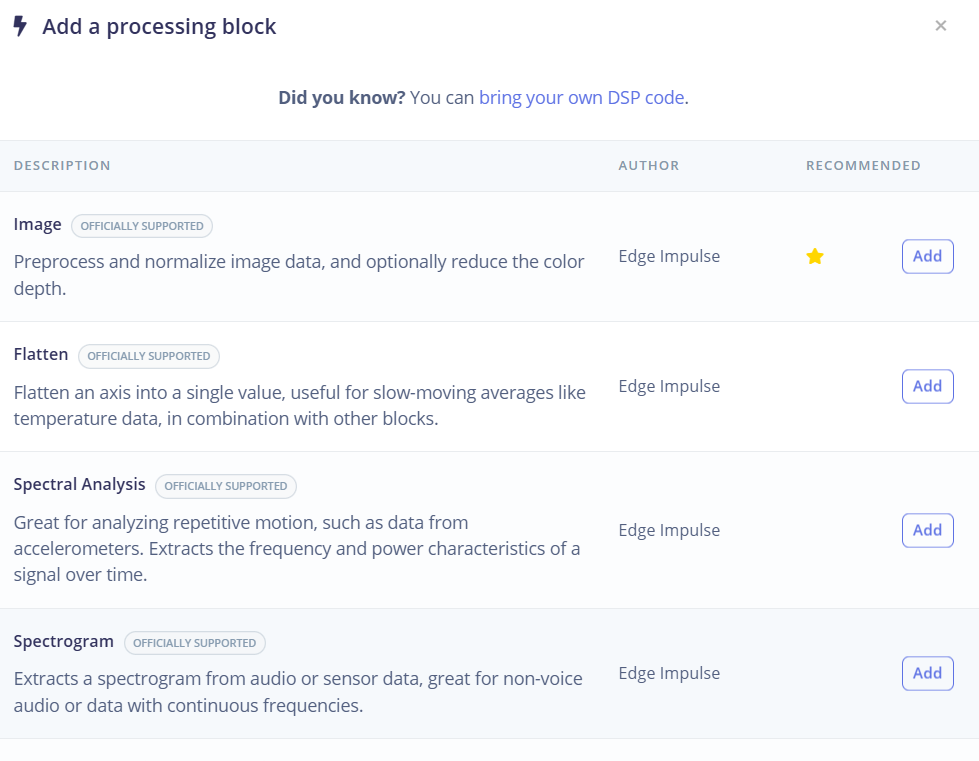
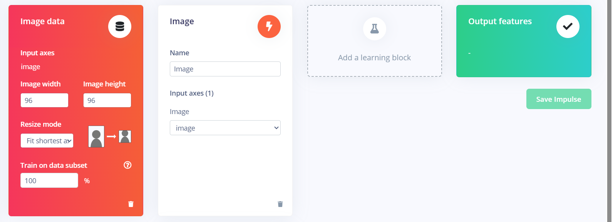
Step 13 – Add learning block
Click on Add a learning block and select Classification.
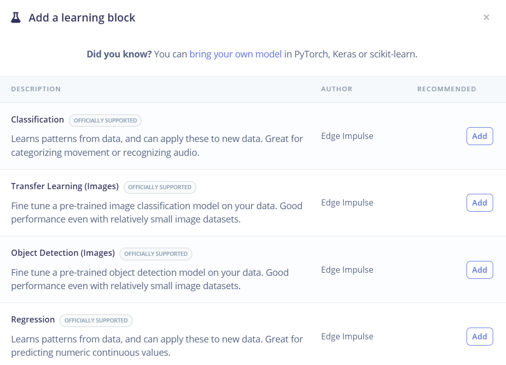
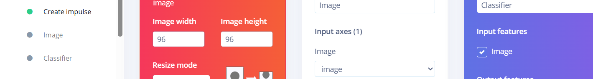
Step 14 – Configure Image block & generate features
Click on Image (or the processing block) and then Save parameters.
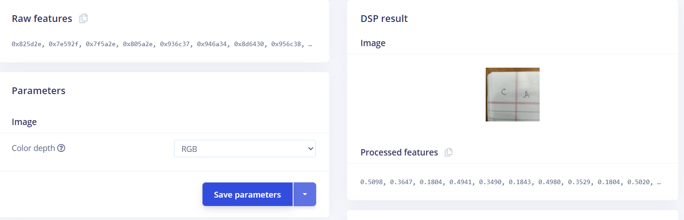
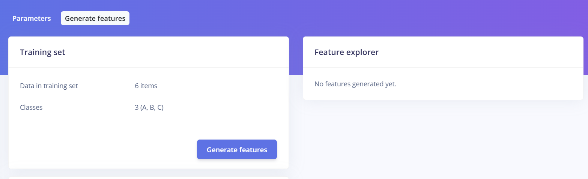
Click on Generate Features to process the data.
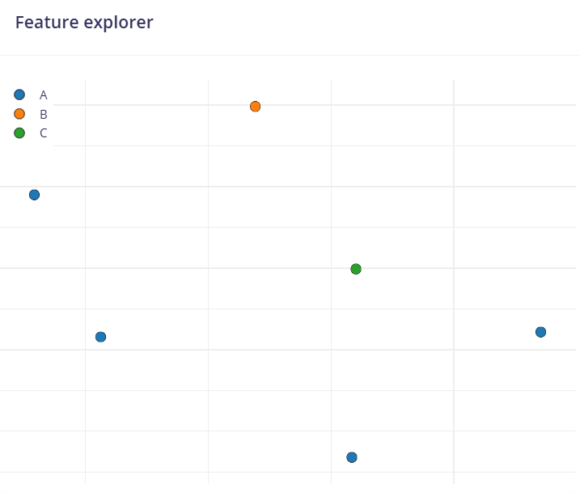
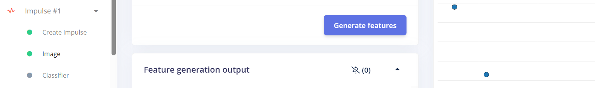
Step 15 – Train the classifier
Click on Classifier (learning block).
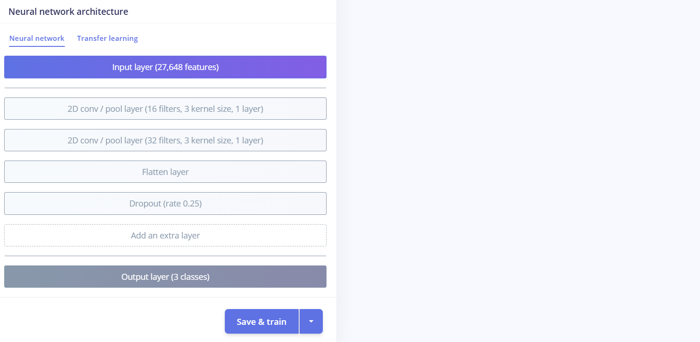
Scroll down and click on Save and train. Wait for the training to complete.
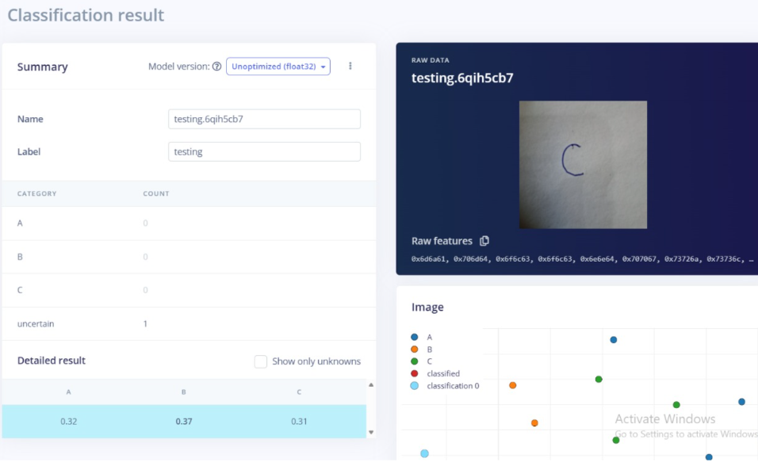
Final Results
After training, you will see the model performance metrics and accuracy.


📌 Key Takeaways
- Edge Impulse simplifies the entire TinyML workflow – from data collection to deployment.
- It supports various sensors (camera, accelerometer, microphone, etc.) and edge devices (ESP32, Arduino, mobile phones).
- Processing data locally reduces latency, saves bandwidth, and enhances privacy.
- The platform is beginner‑friendly and does not require deep ML expertise.
- Applications include smart attendance (alphabet recognition), gesture control, predictive maintenance, and environmental monitoring.
🎯 Conclusion
Edge Impulse is a powerful and user-friendly platform for developing and deploying Machine Learning (ML) models on embedded and edge devices. It simplifies the complete workflow, including data collection, data processing, model training, testing, and deployment. By providing an intuitive interface and support for various microcontrollers and sensors, Edge Impulse enables developers to create intelligent IoT and AI-based applications without requiring extensive expertise in machine learning. It helps reduce development time, improves efficiency, and allows real-time data processing directly on devices, minimizing cloud dependency. Overall, Edge Impulse is an effective tool for building smart, low-power, and real-time AI solutions for applications such as predictive maintenance, activity recognition, environmental monitoring, and smart attendance systems.